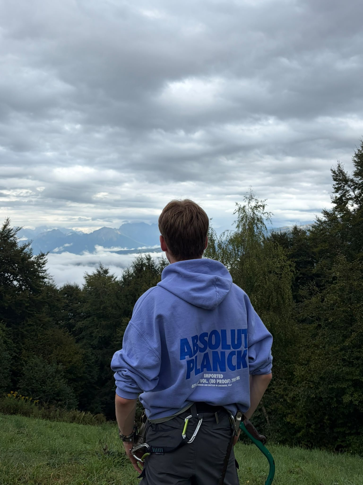
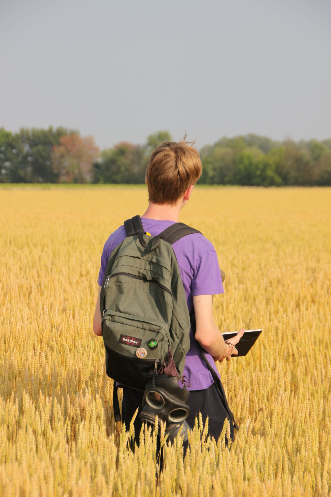

Osservare
Prima di arrivare, guardare. Un luogo comincia dai suoi dettagli.
05 / ESPLORAZIONE
Partire significa cambiare scala: osservare paesaggi, attraversare luoghi nuovi e tornare con una prospettiva diversa.
← torna al profiloNOTA DI CAMPO / 01
Mi piace viaggiare per vedere cosa c’è oltre il punto di partenza: una strada, un panorama, un dettaglio che normalmente passerebbe inosservato.
02 / ARCHIVIO VISIVO
Due frammenti
di esplorazione.

Silenzio, cielo e una linea d’orizzonte che rimette tutto in prospettiva.

Muoversi senza fretta, lasciando che sia il paesaggio a suggerire la direzione.
03 / DIARIO DI ESPLORAZIONE
Il modo in cui
mi piace partire.
Prima di arrivare, guardare. Un luogo comincia dai suoi dettagli.
La distanza rende più chiari i paesaggi e le idee.
Una foto, una nota o una storia da riportare a casa.
TRAVEL LOG / 05
paesaggio · strada · prospettiva · ritorno